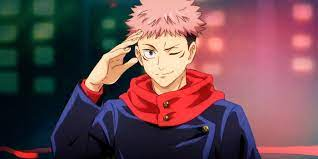
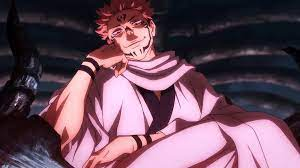

GOJO
Satoru Gojo is a fictional character from Gege Akutami's manga Jujutsu Kaisen. He was first introduced in Akutami's short series Tokyo Metropolitan Curse Technical School as the mentor of the cursed teenager Yuta Okkotsu at Tokyo Prefectural Jujutsu High School.
YUJI
Yuji Itadori is a fictional character and the main protagonist of the manga series Jujutsu Kaisen created by Gege Akutami.
SUKUNA- The King of Curses
Immeasurable Cursed Energy: Sukuna possesses incalculable levels of cursed energy due to his innate power, cementing his title as the King of Curses. He was able to continuously use his techniques throughout his battles without exhausting himself in the slightest.
PANDA
He is a very special type of cursed corpse (an autonomous puppet created by sorcerers) that is sentient; in fact, he is a second-year student at Jujutsu High School. Created by Principal Yaga, Panda is unique in design and ability, able to outperform any other cursed corpse (and more than a few legit sorcerers).